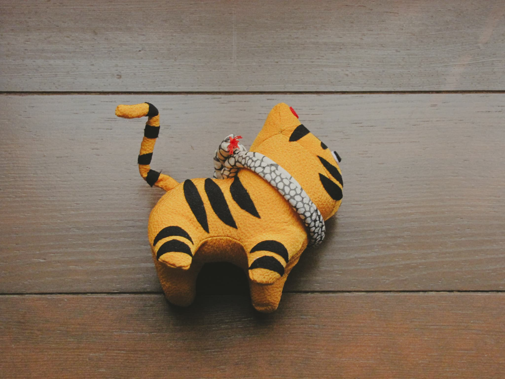

のんびり不思議な世界の住人たち
これまで登場した住人たちが集合しました。
おっと、遠くに旅立った仲間を紹介し忘れていたようです。
おっちょこちょいな案内人たちを許してください！
タペストリー（12支）
獅子舞踊り
タペストリー（だるま）
吊るし雛（桜）
吊るし雛（五月）
置き物小（12支）
あらためて、この世界の仲間たちが勢ぞろいします！
ぜひお気に入りを見つけてくださいね！
吊るし雛（桜）
タペストリー（やっこ凧）

タペストリー（だるま）
つるし雛（金魚）
置き物（猿）
置き物（鶏）
手毬
置き物（羊）
- 
置き物（虎）
置き物（龍）
置き物（牛）
置き物（猪とうり坊）
置き物（犬）
かごと大根
タペストリー（鯉のぼり）
タペストリー（どくだみ）
タペストリー（さざんか）
タペストリー（さざんか）
さき織のバッグ
置き物（着物のねずみ）

ピエロ
もち花のブローチ
タペストリー（お雛さま）
タペストリー（つるし雛）
うさぎのお雛さま
タペストリー（草履と下駄）
タペストリー（3代古布）

茶箱の一閑張
吊るし雛（桜）
タペストリー（やっこ凧）
タペストリー（だるま）
つるし雛（金魚）
置き物（猿）
置き物（鶏）
手毬
置き物（羊）
置き物（虎）
置き物（龍）
置き物（牛）
置き物（猪とうり坊）
置き物（犬）
かごと大根
タペストリー（鯉のぼり）
タペストリー（どくだみ）
タペストリー（さざんか）
タペストリー（さざんか）
さき織のバッグ
置き物（着物のねずみ）
ピエロ
もち花のブローチ
タペストリー（お雛さま）
タペストリー（つるし雛）
うさぎのお雛さま
タペストリー（草履と下駄）
一閑張を施したざるに古布の草履や下駄を散りばめた作品。タペストリー（3代古布）
おばあちゃんのお母さん、夫、子供２人の着物の端切れを使って作った思い入れのある作品。
サイズは1.5m×1mの大作。茶箱の一閑張